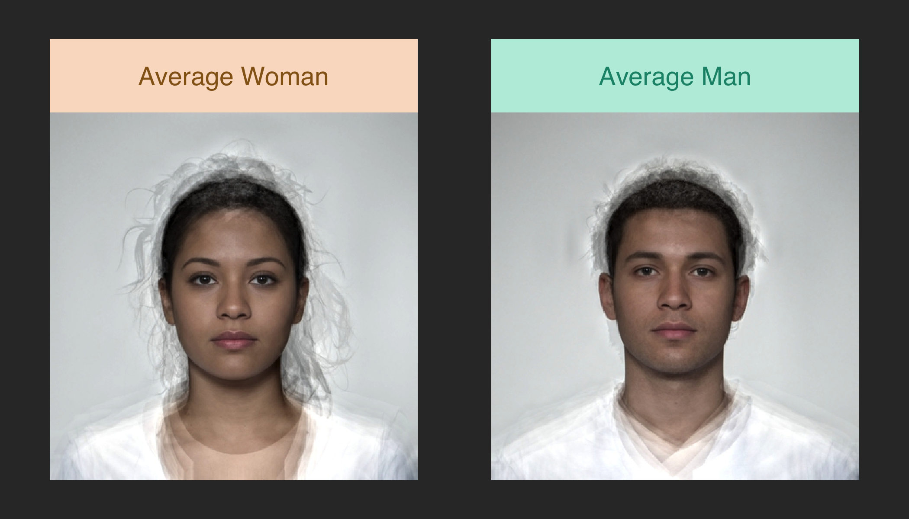

library(webmorphR)
#>
#> ************
#> Welcome to webmorphR. For support and examples visit:
#> https://facelab.github.io/webmorphR/
#> ************
#> Logged in as user 1
#> Your projects are using 25 Gb of 100 Gb
#> You have all permissions for project 1WebmorphR has plotting functions to make it easier to create reproducible figures from your stimuli.
stim <- faces("test")If you don’t set any arguments apart from the stimulus list, the result will be a ggplot object that will be displayed using the default or chunk figure dimensions.
plot_fig(stim)Due to an annoying problem with how RStudio displays text in plots in R Markdown files when you run code chunks interactively versus knit them, plot_fig() allows you to set the width and height of the figure (in inches, but you can change this with the units argument). Then it will render the image as file and return the output of knitr::include_graphics(). You can optionally set a filename to save the file.
plot_fig(stim, width = 7, height = 3.5,
filename = "fig/fig_test.png")Borders and Background
You can add a border to each image. Values less than 1 will set border width as a percentage of the image width, while values greater than 1 will set it as pixels (relative to original image size). You can also change the border colour.
plot_fig(stim, 7, 3.5, border.width = 0.05, border.color = "hotpink")You can set different border sizes for the top, right, bottom and left sides (think “TRouBLe”). This can be useful for creating space for labels outside the image.
plot_fig(stim, 7, 4, border.width = c(.1, 0, 0, 0),
border.color = "black",
label.color = "white",
label.y = 1.05, vjust = 0.5)You can set the border colour separately for each image. Set a margin (in units, defaults to 0.1 inches) and background colour to separate panels.
plot_fig(stim, 7, 4,
border.width = c(0.2, 0, 0, 0),
border.color = c("#F9DEC9", "#BAEDDD"),
labels = c("Average Woman", "Average Man"),
label.color = c("#946319", "#1A9178"),
label.y = 1.1, vjust = 0.5,
margin = 0.2, bg.color = "grey20")
Delineations
Set pt.plot and/or line.plot to TRUE to show the delineations. By default, points are green pluses and lines are translucent yellow.
plot_fig(stim, 7, 3.5, pt.plot = TRUE, line.plot = TRUE)You can change the default colours and translucency with the colour and alpha arguments, or set separate ones for labels, points and lines by prefixing the with label., pt. and line.. Specific aesthetics override the general ones.
plot_fig(stim, 7, 3.5, img.plot = FALSE, pt.plot = TRUE, line.plot = TRUE,
colour = "blue",
pt.shape = 1,
line.color = "red",
alpha = 1)You can set line.plot to “bezier” to show curved lines, but this takes a long time and isn’t quite right yet. (Calculating bezier curves is harder than you’d think.)
Delete some points
remove_points <- frl_features("imprecise")
stim %>%
pt_delete(remove_points) %>%
plot_fig(8, 4,
pt.shape = "index",
pt.colour = "black",
line.plot = TRUE,
line.colour = list("green", rainbow(6)))
Point removal
Labels
By default, figure panels are labelled with the image name. Set labels = "" to remove labels.
plot_fig(stim, 7, 3.5, labels = "")Use the rename() function to set new names or set labels to a vector of labels to use.
faces("composite") %>%
rename(pattern = "f_", replacement = "Female ") %>%
rename(pattern = "m_", replacement = "Male ") %>%
plot_fig(10, 4, nrow = 2)
Labels can be positioned with the label.position argument, which takes one value for the vertical position (top, middle, bottom) and one value for the horizontal position (left, center, right).
plot_fig(stim, 7, 3.5,
labels = c("Female", "Male"),
label.position = "top left",
label.color = "darkmagenta",
label.size = 6,
label.fontface = "italic")If you want more fine control of label position, you can override the defaults with the arguments hjust, vjust, label.x, label.y and label.angle.
plot_fig(stim, 7, 3.5,
label.color = "dodgerblue3",
label.size = 7,
label.fontface = "bold",
hjust = 0.5,
vjust = 0.5,
label.x = .15,
label.y = .15,
label.angle = 360-45)Word Stimuli
Make word stimuli by starting with blank images. You can specify the size and colour.
new_stimuli <- blank(n = 6, width = 100, height = 100,
color = c("red", "orange", "yellow", "green", "blue", "purple"))Then you can add words to each stimulus with the label() function.
colours <- c(red = "red",
orange = "darkorange",
green = "darkgreen",
blue = "blue",
purple = "purple")
n <- length(colours)
labels <- rep(names(colours), each = n)
stroop <- blank(n*n, 400, 100) %>%
label(labels, size = 5, color = colours,
position = "center center")This script took 0.5 minutes to render all the included images from scratch.